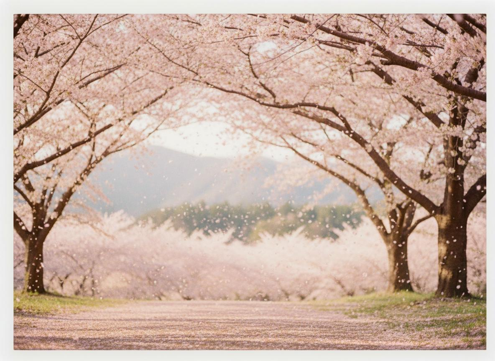
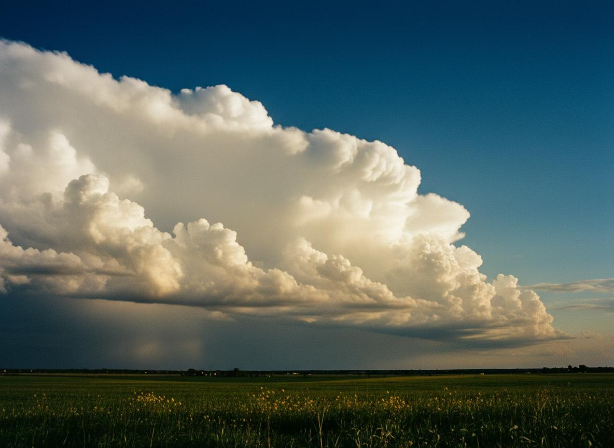
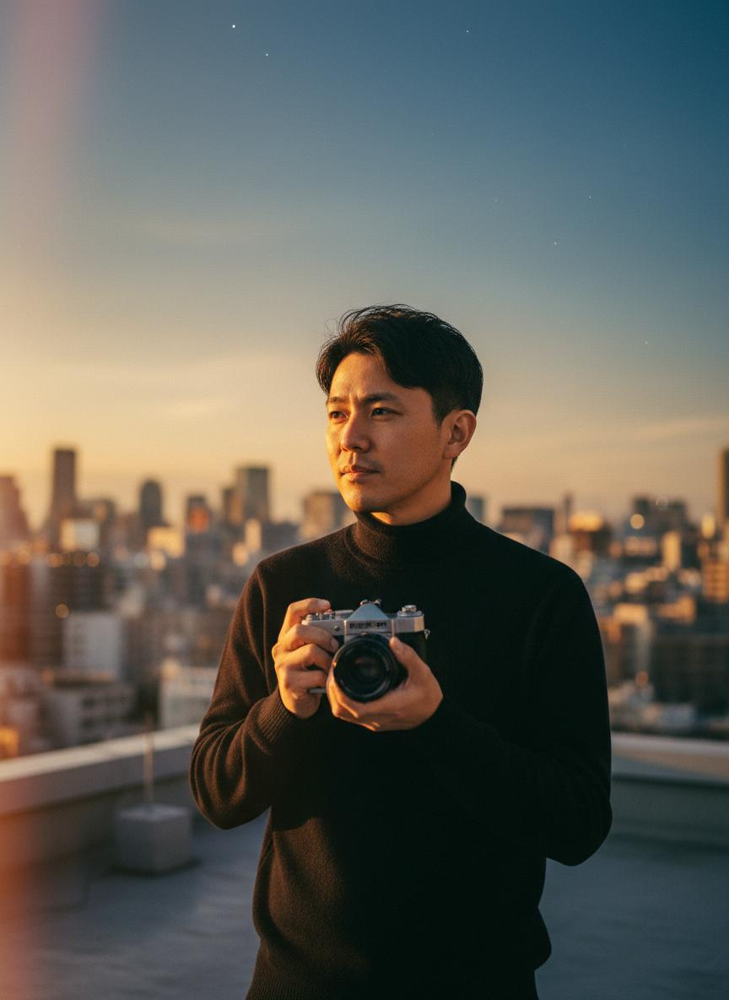

用镜头记录自然最温柔的瞬间，从春樱到冬雪，每一帧都是时间的礼物。

樱花隧道下，花瓣如雪般飘落。春天最温柔的时刻，不是花开，而是花落。风过处，满地粉色，仿佛整个世界都融化在这片柔软的粉色光晕里。
盛夏的草原上，积雨云如一座白色城堡悬于天际。阳光穿透云层，在大地上投下戏剧性的光影。这是夏天最壮阔的独白——天空与大地的对话。

蒸汽火车穿过金黄与深红交织的枫林，向晚的光斜斜地洒下来。秋天的列车不赶时间，它只是慢慢行驶，把每一片落叶的温度都收进车窗。
雪夜里，一盏路灯独自亮着。雪花在暖光中飞舞，像无数颗小小的星星。冬天的温柔藏在最冷的时刻——当你走过路灯，身后留下一串脚印，很快被雪覆盖。

站在城市的高处，等待光线最好的那一刻。摄影不是记录，而是等待——等待光线、等待季节、等待那个让平凡变得不凡的瞬间。